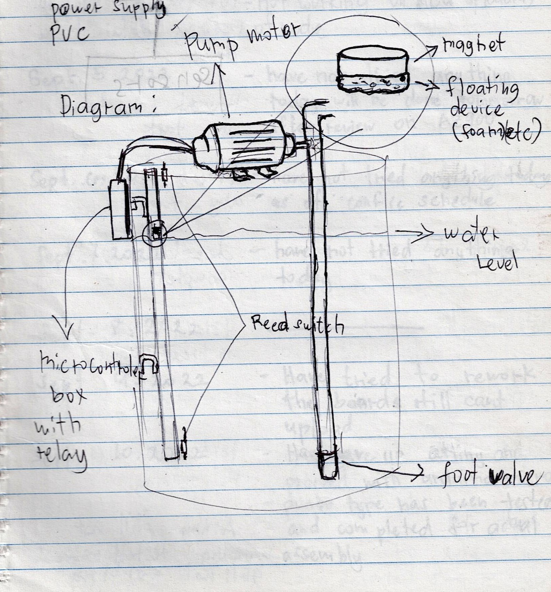
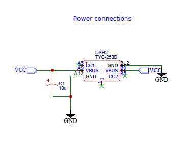
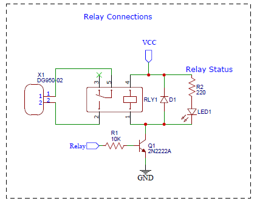
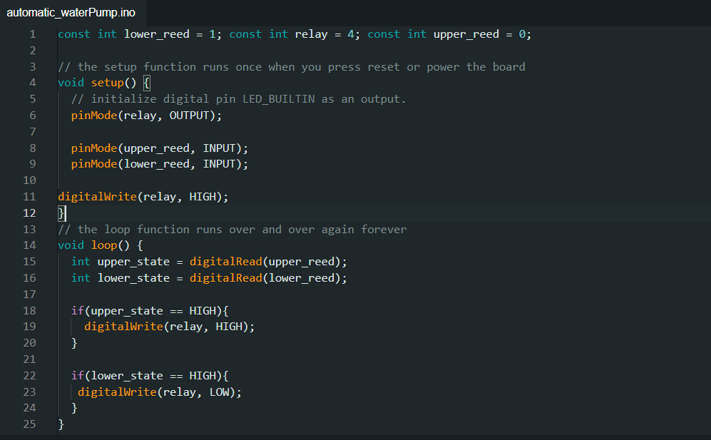

[ Tutorial ]
Automatic pump controller using Attiny85

Introduction
In our daily lives, we often find ourselves confronted with mundane tasks that demand our attention, like washing dishes or do the laundry. While these chores may seem monotonous and time-consuming, they are essential and must be addressed. Fortunately, for those of us with a background in electronics and engineering, there exists a creative outlet for simplifying such tasks - automation.
One such task that frequently arises is monitoring the water level in a plastic drum and manually controlling the pump to avoid overflows or pump dry runs. This repetitive duty inspired me to leverage my electronics expertise and devise a solution that could handle this task seamlessly. The result? An ingenious device - the Automatic Pump Controller, driven by the versatile ATtiny85 microcontroller.
Components needed
1x Attiny85
1x 5v Relay
2x LEDs (red & green)
1x 2N222A transistor
1x Female USB
1x Type C female connector
1x Diode
2x 1k resistor
1x 10k resistor
2x 220 resistor
1x Screw terminal block
Project Challenges
For our device to do what I wan't it to do, I need to tackle 2 most relevant problem. First, How can the microcontroller know if the tank is about to overflow or runs dry. Second, How can we turn off the water pump using the dc signal from the Attiny85.
There are plenty amount of ways that we can solved the first problem involving using float switch, a ultrasonic sensor but I settle on having a 1 inch diameter pvc, magnet and reed switch as ilustrated with my beatiful diagram below.
The magnet with floating meterial under it will follow the water level inside the tank, when its reaches the reed switchs at the top and at the buttom the reed swicth will conduct where the attiny85 is monitoring. We can then write a simple program in arduino that will turn the pump relay on when the top reed switch conduct and turn it off when the bottom reed switch conduct.
The Circuit Diagram
Download the diagram Here.
The diagram above show the connections for the type C as power input that will supply the board power with a filter capacitor to smooth out the voltage input.

Here we can see that we use pin 4 as output for relay cignal and the pin 5 and 6 as input with pulldown resistor to prevent undefined state of the pins and the connected the USB that is connected to the readswitch. Take note that I use a male USB and cut its end so I can connect it to the reed switch on the pipe like in the diagram so its not included on the board design.
The X1 is where the 220v AC will be hookedup then to the normaly cosed of the relay. once the Attiny85 notice that one of the reed switch conduct it will generate a cignal to the transistor that turns it on that allows the through the relay coil and pulls the relay switch on or off that inturns give and cutoff power of the water pump.Please note that the AC connected to the X1 is in series to the pump. PLEASE don't play with mains voltage if you don't know what your doing cause one mistake can result to fatal injuries and even death!!
Arduino Code
Here we have simple code that turn on and off if one of the reed swicth conduct. download the code
Conclussion
Our journey to create the Automatic Pump Controller, driven by the ATtiny85 microcontroller, has shown us the power of innovation and automation. By simplifying the task of monitoring water levels and controlling pumps, we've made our lives more efficient. This project is a testament to the possibilities that arise when we harness technology to improve everyday tasks. Whether you're an electronics enthusiast or someone looking for ways to streamline daily chores, automation offers a world of opportunities. As we wrap up this project, remember that innovation and creativity can elevate the ordinary. Embrace the world of electronics, automation, and problem-solving, and discover how you can transform routine tasks into effortless endeavors.